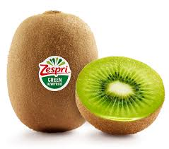
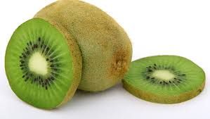
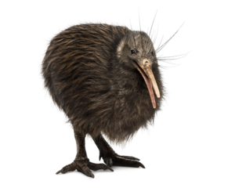
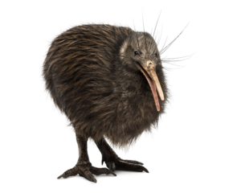
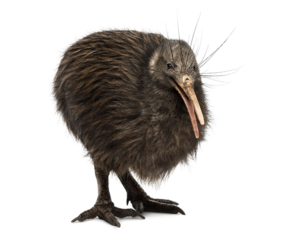

La production de kiwis dans le monde
Par Georges, le 2 février 2012



 


L'Italie est le premier producteur mondial en 2009, d'où ses recherches dans le développement de nouveaux cultivars comme à l'université d'Udine. La France (5e mondial et troisième européen) produisait un peu moins de 76 000 tonnes en 2004, son premier client est l'Espagne. Il est cultivé dans l'Ariège, en Tam-et-Garonne et sur la façade atlantique, du Pays basque à ma Bretagne.
Les kiwis sont des fruits de plusieurs espèces de lianes du genre Actinidia, famille des Actinidiaceae. Ils sont originaires de Chine, notamment de la province de Shaanxi.